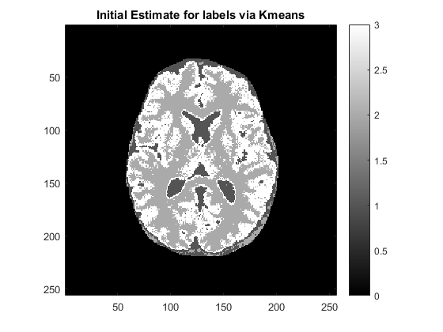
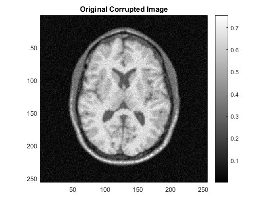
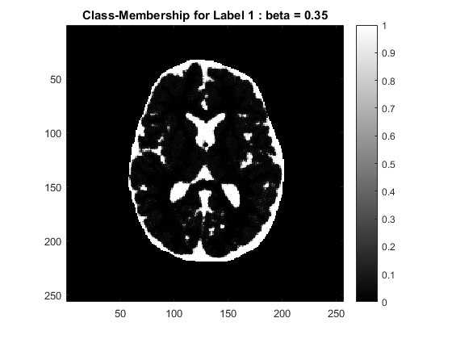
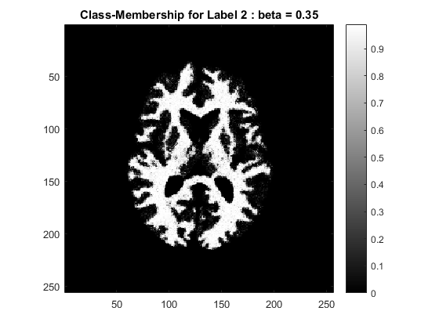
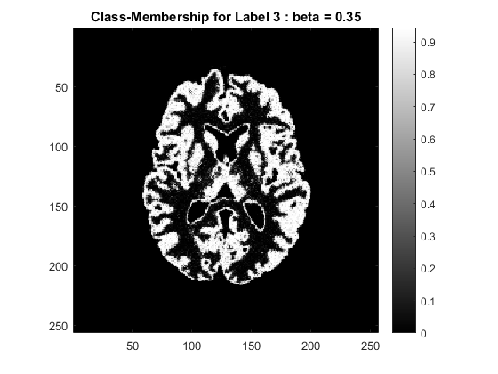
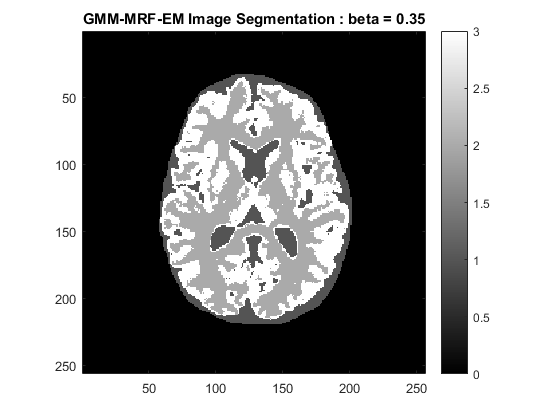
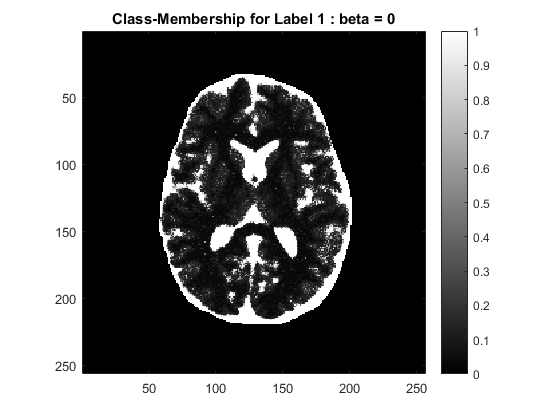
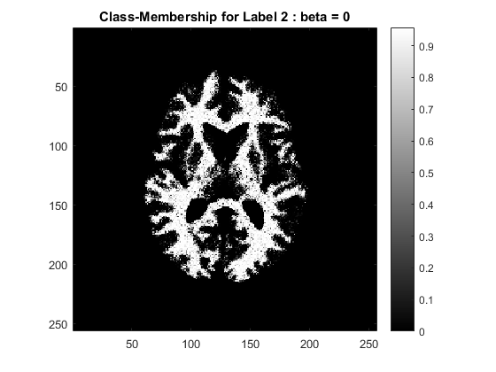
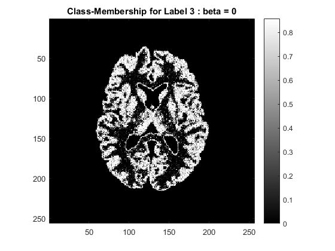

Contents
clear;
close all;
load('../data/assignmentSegmentBrainGmmEmMrf.mat');
rng(0);
Y = imageData;
mask = imageMask;
K = 3;
Z = initial_label(Y,mask);
plot_images(Z,'Initial Estimate for labels via Kmeans')
m = zeros(1,K);
s = zeros(1,K);
for label = 1:K
m(1,label) = mean(Y(logical(Z==label)));
s(1,label) = std(Y(logical(Z==label)));
end

EM beta = 0.35
display('Beta = 0.35');
beta = 0.35;
[seg, G, m_0] = EMLabels(Y, mask, K, Z, m, s, beta);
plot_images(imageData, 'Original Corrupted Image');
plot_images(G(:, :, 1), 'Class-Membership for Label 1 : beta = 0.35');
plot_images(G(:, :, 2), 'Class-Membership for Label 2 : beta = 0.35');
plot_images(G(:, :, 3), 'Class-Membership for Label 3 : beta = 0.35');
plot_images(seg, 'GMM-MRF-EM Image Segmentation : beta = 0.35');
Beta = 0.35
ICM change in Posterior -> log(P(x | y, beta_val, theta)) : oldpos = 4.426786e+04 => newpos = 4.811266e+04
ICM change in Posterior -> log(P(x | y, beta_val, theta)) : oldpos = 5.211542e+04 => newpos = 5.222189e+04
ICM change in Posterior -> log(P(x | y, beta_val, theta)) : oldpos = 5.315474e+04 => newpos = 5.326694e+04
ICM change in Posterior -> log(P(x | y, beta_val, theta)) : oldpos = 5.362876e+04 => newpos = 5.365166e+04
ICM change in Posterior -> log(P(x | y, beta_val, theta)) : oldpos = 5.381840e+04 => newpos = 5.383943e+04
ICM change in Posterior -> log(P(x | y, beta_val, theta)) : oldpos = 5.392594e+04 => newpos = 5.393042e+04
ICM change in Posterior -> log(P(x | y, beta_val, theta)) : oldpos = 5.397674e+04 => newpos = 5.398179e+04
ICM change in Posterior -> log(P(x | y, beta_val, theta)) : oldpos = 5.400959e+04 => newpos = 5.401783e+04
ICM change in Posterior -> log(P(x | y, beta_val, theta)) : oldpos = 5.403665e+04 => newpos = 5.404722e+04
ICM change in Posterior -> log(P(x | y, beta_val, theta)) : oldpos = 5.405933e+04 => newpos = 5.406206e+04
ICM change in Posterior -> log(P(x | y, beta_val, theta)) : oldpos = 5.406996e+04 => newpos = 5.407368e+04
ICM change in Posterior -> log(P(x | y, beta_val, theta)) : oldpos = 5.407928e+04 => newpos = 5.408064e+04
ICM change in Posterior -> log(P(x | y, beta_val, theta)) : oldpos = 5.408440e+04 => newpos = 5.408377e+04
Posterior not increased.No MAP update.
Terminating
    
EM beta = 0
display('Beta = 0');
beta = 0;
[seg, G, m_1] = EMLabels(Y, mask, K, Z, m, s, beta);
plot_images(G(:, :, 1), 'Class-Membership for Label 1 : beta = 0');
plot_images(G(:, :, 2), 'Class-Membership for Label 2 : beta = 0');
plot_images(G(:, :, 3), 'Class-Membership for Label 3 : beta = 0');
plot_images(seg, 'GMM-MRF-EM Image Segmentation : beta = 0');
Beta = 0
ICM change in Posterior -> log(P(x | y, beta_val, theta)) : oldpos = 4.644433e+04 => newpos = 4.922289e+04
ICM change in Posterior -> log(P(x | y, beta_val, theta)) : oldpos = 5.281217e+04 => newpos = 5.290560e+04
ICM change in Posterior -> log(P(x | y, beta_val, theta)) : oldpos = 5.381120e+04 => newpos = 5.384951e+04
ICM change in Posterior -> log(P(x | y, beta_val, theta)) : oldpos = 5.429262e+04 => newpos = 5.432591e+04
ICM change in Posterior -> log(P(x | y, beta_val, theta)) : oldpos = 5.459501e+04 => newpos = 5.462376e+04
ICM change in Posterior -> log(P(x | y, beta_val, theta)) : oldpos = 5.481778e+04 => newpos = 5.483839e+04
ICM change in Posterior -> log(P(x | y, beta_val, theta)) : oldpos = 5.499373e+04 => newpos = 5.501076e+04
ICM change in Posterior -> log(P(x | y, beta_val, theta)) : oldpos = 5.514516e+04 => newpos = 5.515561e+04
ICM change in Posterior -> log(P(x | y, beta_val, theta)) : oldpos = 5.527104e+04 => newpos = 5.527709e+04
ICM change in Posterior -> log(P(x | y, beta_val, theta)) : oldpos = 5.537257e+04 => newpos = 5.537586e+04
ICM change in Posterior -> log(P(x | y, beta_val, theta)) : oldpos = 5.545156e+04 => newpos = 5.545421e+04
ICM change in Posterior -> log(P(x | y, beta_val, theta)) : oldpos = 5.551201e+04 => newpos = 5.551367e+04
ICM change in Posterior -> log(P(x | y, beta_val, theta)) : oldpos = 5.555632e+04 => newpos = 5.555710e+04
ICM change in Posterior -> log(P(x | y, beta_val, theta)) : oldpos = 5.558770e+04 => newpos = 5.558823e+04
ICM change in Posterior -> log(P(x | y, beta_val, theta)) : oldpos = 5.560994e+04 => newpos = 5.561020e+04
ICM change in Posterior -> log(P(x | y, beta_val, theta)) : oldpos = 5.562542e+04 => newpos = 5.562551e+04
ICM change in Posterior -> log(P(x | y, beta_val, theta)) : oldpos = 5.563603e+04 => newpos = 5.563618e+04
ICM change in Posterior -> log(P(x | y, beta_val, theta)) : oldpos = 5.564356e+04 => newpos = 5.564366e+04
ICM change in Posterior -> log(P(x | y, beta_val, theta)) : oldpos = 5.564879e+04 => newpos = 5.564881e+04
ICM change in Posterior -> log(P(x | y, beta_val, theta)) : oldpos = 5.565235e+04 => newpos = 5.565237e+04
ICM change in Posterior -> log(P(x | y, beta_val, theta)) : oldpos = 5.565480e+04 => newpos = 5.565481e+04
ICM change in Posterior -> log(P(x | y, beta_val, theta)) : oldpos = 5.565648e+04 => newpos = 5.565648e+04
ICM change in Posterior -> log(P(x | y, beta_val, theta)) : oldpos = 5.565762e+04 => newpos = 5.565762e+04
ICM change in Posterior -> log(P(x | y, beta_val, theta)) : oldpos = 5.565840e+04 => newpos = 5.565840e+04
ICM change in Posterior -> log(P(x | y, beta_val, theta)) : oldpos = 5.565893e+04 => newpos = 5.565893e+04
ICM change in Posterior -> log(P(x | y, beta_val, theta)) : oldpos = 5.565929e+04 => newpos = 5.565929e+04
Posterior not increased.No MAP update.
Terminating
  
- The optimal value of beta is = 0.35
- The label image is initialized to kmeans with 3 clusters.This is a fast way of getting good initialization for the labels.
- Initial Estimates for class means and variance are obtained from the initialized labels by taking membership to any class as 1 and hence mean and standard deviations are that of sample data in that class.
- Initial Mean = [0.2963, 0.6049, 0.5062] ; Initial Standard Deviation = [0.0595, 0.1106, 0.0413]
- Optimal estimate of class means for beta = 0.35 are [0.3193, 0.6286, 0.5221] and for beta = 0 are [0.3795, 0.6358, 0.5346]